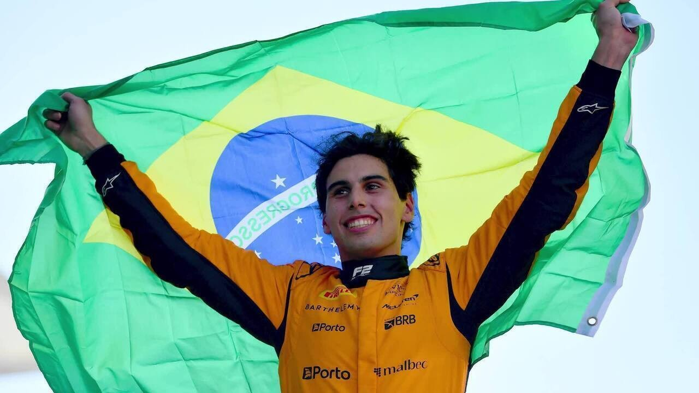
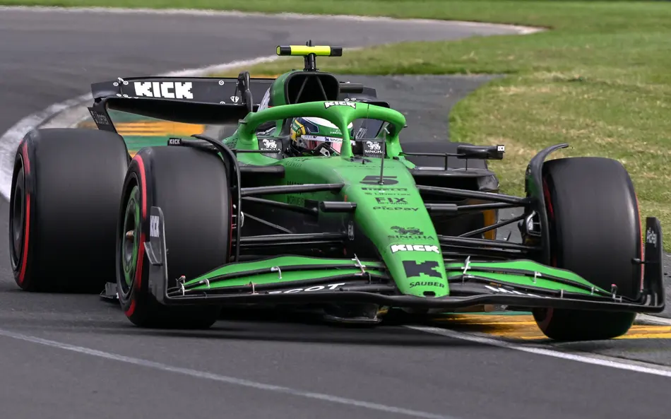

Gabriel Bortoleto: A Promessa Brasileira que Brilha na Fórmula 1 em 2025
Alemão da Caravan
Publicada em: 04/06/2025
Gabriel Lourenzo Bortoleto Oliveira, natural de Osasco (SP), é a grande aposta do Brasil na Fórmula 1 em 2025, competindo pela equipe Sauber. Com apenas 20 anos, o piloto vem conquistando espaço e reconhecimento graças a uma trajetória rápida e consistente nas categorias de base do automobilismo mundial.
De Onde Veio o Talento?
A carreira de Gabriel começou cedo, aos sete anos, no kartismo sul-brasileiro, onde já mostrou talento ao conquistar seu primeiro título no mesmo ano. Entre 2016 e 2018, ele migrou para o kartismo europeu, obtendo resultados expressivos, como o terceiro lugar no Mundial da FIA e vice-campeonato no WSK Super Master Series.

Em 2020, Gabriel fez sua estreia nos monopostos pela Fórmula 4 Italiana, terminando em quinto lugar com uma vitória e quatro poles. Em 2021, subiu para a Fórmula Regional Europeia, onde teve uma temporada de adaptação, e em 2022, com a R-ace GP, conquistou duas vitórias e cinco pódios, terminando em sexto lugar.
O grande salto veio em 2023, quando disputou a Fórmula 3 pela Trident e conquistou o título já na temporada de estreia, com duas vitórias e quatro pódios, liderando o campeonato desde a primeira etapa. No ano seguinte, 2024, Gabriel foi campeão da Fórmula 2, repetindo a façanha de vencer na primeira tentativa, com duas vitórias, duas poles e 19 colocações entre os seis primeiros, somando 214,5 pontos.
A Estreia na Fórmula 1 e o Desafio Atual
Em 2025, Gabriel Bortoleto estreou na Fórmula 1 pela Sauber, equipe em transição que será rebatizada como Audi em 2026. Apesar de ainda não ter pontuado na temporada, ele tem mostrado evolução constante e um bom ritmo de corrida. No GP da Espanha, por exemplo, conquistou sua melhor colocação até agora, terminando em 12º lugar, mesmo com uma estratégia que não favoreceu a pontuação.
Gabriel está motivado para as próximas etapas, como o GP do Canadá, onde correrá pela primeira vez no circuito Gilles Villeneuve. Ele tem se dedicado intensamente ao simulador para conhecer as particularidades da pista e buscar o melhor desempenho possível.
Características e Perspectivas
Bortoleto é reconhecido pela consistência, foco e capacidade de adaptação, qualidades que o ajudaram a conquistar títulos importantes em sua curta carreira. Ele é um dos poucos pilotos a conquistar os campeonatos da Fórmula 3 e Fórmula 2 em sua primeira tentativa, colocando-o ao lado de nomes como George Russell, Oscar Piastri e Charles Leclerc.
Na Sauber, ele divide a equipe com o experiente Nico Hulkenberg, que já soma pontos e serve como referência para o jovem brasileiro. A expectativa é que Gabriel evolua ainda mais à medida que a equipe se prepara para a chegada da Audi e a melhora do carro.